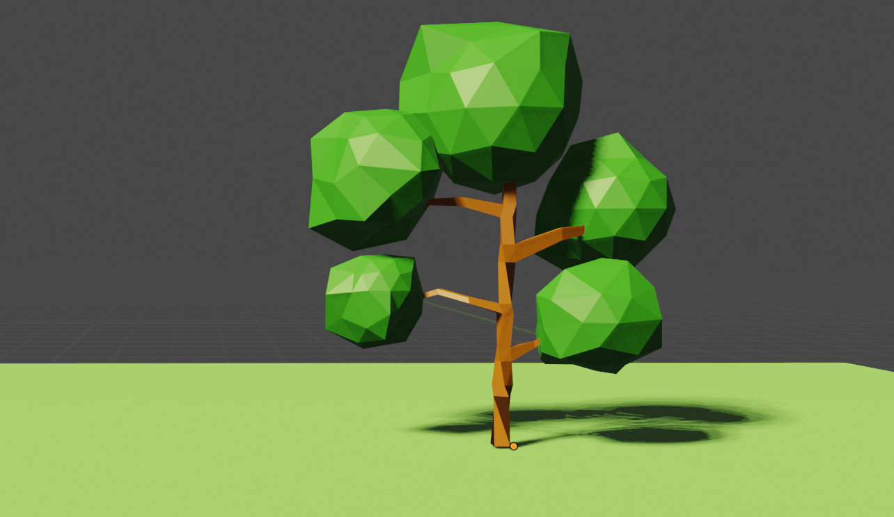
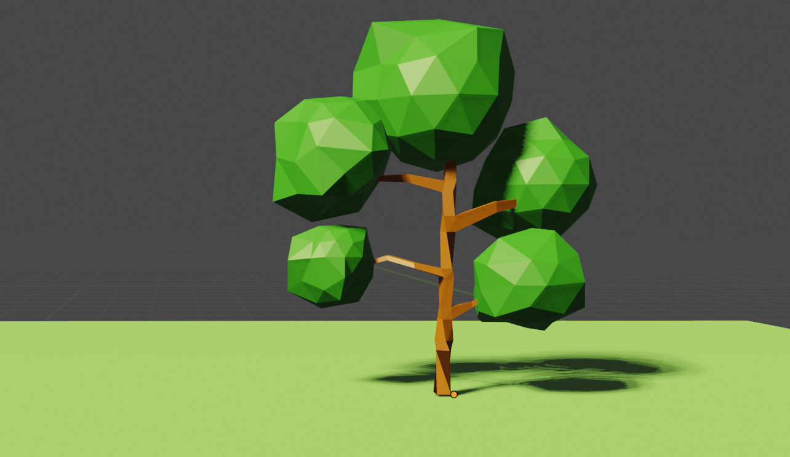
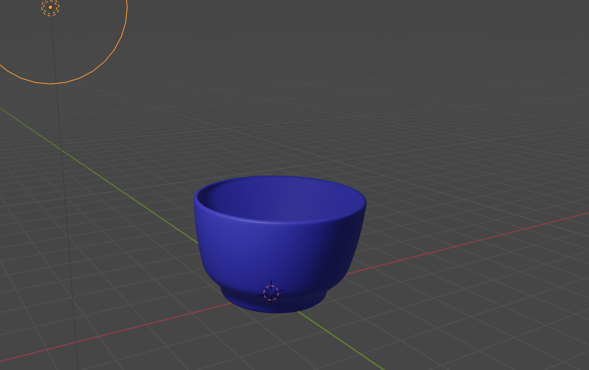
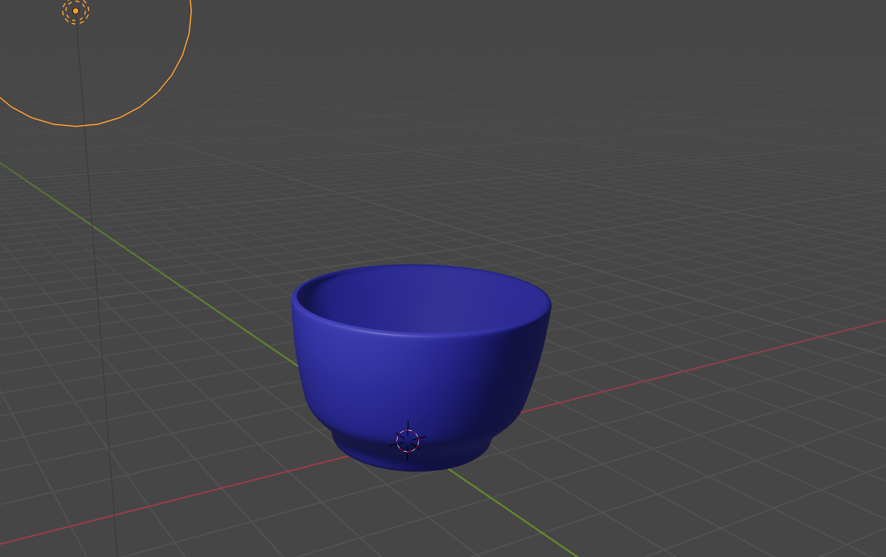

Learning Blender
Since I am a novice to Blender, I decided to do three tutorials: (1) redoing the tree from class, (2) my attempt to design a cup, and (3) design a cup from another tutorial because the first one came out horrible.
 

Next, I attempted to design a cup from a tutorial on Youtube. I failed at using the Bevel tool because I wanted to improvise on the stem. Also, my finish was not smooth. I probably should have use more of the loop cut to smooth out the cup.


Again, I tried to design a cup again using another tutorial. This time is was a success. I did not add because it was complex to follow. I was able to easily follow the Modifier tool and started to understand the differences between edges and faces. Trying to freestyle my design, the cup came out a lil crooked.
 

From this exercise, I am learning that repetition creates perfection.